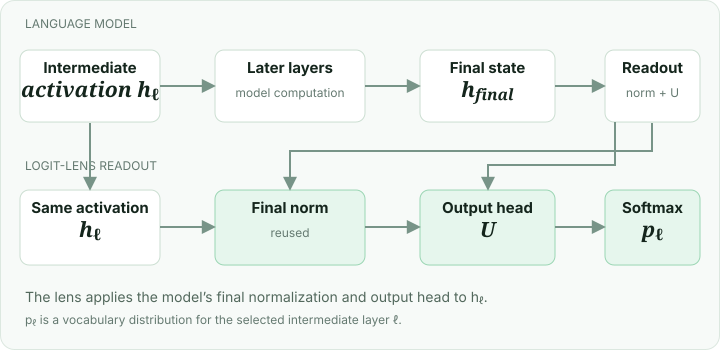

A language model refines its representation as it processes text. The logit lens takes an intermediate activation and applies the model’s final output readout to it. Repeating this across layers gives a series of vocabulary distributions to inspect.
The idea

hℓ is the intermediate activation, norm is the model’s final normalization, and U is its output projection. Softmax converts the resulting token scores into a probability distribution. The exact readout depends on the model architecture.
A tiny example
For a toy vocabulary with only “cat” and “dog,” suppose an intermediate readout gives scores [2, 0]. Softmax gives approximately [0.88, 0.12], so “cat” leads in that readout. A later layer may give a different distribution. This is a toy calculation, not a prediction measured from a model.
What you need
A runnable language model, tokenizer, input, intermediate activations, and access to the final readout. The plain logit lens assumes the final readout is meaningful at earlier layers; representation changes can make it misleading. The tuned lens addresses this by fitting a separate translator for each layer before applying the readout.